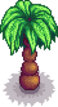

Palmera
Ir a la navegación
Ir a la búsqueda
| Palmera | |
 | |
| Información | |
| Semilla | N/A |
| Producto de resinera | N/A |
| Tiempo de crecimiento | Variable |
La Palmera es un tipo de árbol que sólo se puede encontrar en el Desierto de Calico y en la Isla Jengibre. No suelta semillas y no puede plantarse en ningún otro lugar. Puede talarse y al sacudirlo puede soltar un coco. Las palmeras en Isla Jengibre también pueden arrojar cocos dorados .Tras talarlo, cada día hay un 20% de probabilidades de que crezca a la siguiente fase. No se puede colocar una resinera en ellas.
Fase de crecimiento
| Fase 1 | Fase 2 | Fase 3 | Tocón |
|---|---|---|---|
 |
Notas
A pesar de ser descrito en el juego como una "semilla de la palma de coco", los cocos no se pueden plantar para cultivar palmeras.
Historial
- 1.4: Se eliminó el error que permitía tocar las palmeras. Las palmeras ahora hacen ruido cuando se sacuden en invierno.
- 1.5: Se ha añadido un nuevo gráfico para las palmeras de la isla del jengibre.
| Árboles | |
|---|---|
| Árboles | Arce • Palmera • Pino • Roble • Árbol de caoba |
| Árboles frutales | Albaricoquero • Cerezo • Granado • Manzano • Melocotonero • Naranjo • Platanero • Árbol de mango |
| Semillas | Bellota • Piña • Semilla de arce • Semilla de caoba • Semilla de árbol místico • Semilla musgosa |
| Fruta | Albaricoque • Cereza • Granada • Manzana • Melocotón • Naranja • Mango • Plátano |
| Otros | Árbol místico • Árbol seta • Árboles de lluvia verde • Arbusto de té • Tocón grande • Tronco grande |